Demographic data base (ancient Sweden) tough controls
Loading details
library(data.table); library(ggplot2); library(knitr); library(lme4); library(QuantPsyc)
opts_chunk$set(warning=TRUE, cache=TRUE,tidy=FALSE,autodep=TRUE,dev=c('png','pdf'),fig.width=20,fig.height=12.5,out.width='1440px',out.height='900px',cache.extra=file.info('ddb.rdata')[, 'mtime'])
source("0__helpers.R")
load("ddb.rdata")Analysis description
Data subset
The ddb.1 dataset contains only those participants where paternal age is known, the birthdate is between 1760 and 1880 and the marriage is known (meaning we know when it started and how it ended by spousal death). In known marriages we can assume that missing death dates for the kids mean that they migrated out.
Model description
All of the following models have the following in common:
Optimizer settings
Bobyqa is fairly robust to convergence failures. In addition to using Bobyqa, we center some variables that otherwise lead to large eigenvalues.
control_defaults = glmerControl(optimizer = "bobyqa")Covariates
As in our main models, we control for birth.cohort (birth years in five equally large bins), male sex and region. Additionally, we control for paternal and maternal loss (whether either parent died within 5 years of the birth), for maternal age (bins of 14-20, 20-35 and 35-50), the total number of siblings (constant for all siblings) and the number of siblings who where alive and dependent during the first 5 years of the child (defined as being alive simultaenously, less than 10 years old, and not dying in the first year).
Model stratification
We added random intercepts for each family (father-mother dyad). We then controlled for the average paternal age in the family. Hence, the paternal age effects in the plot are split into those between families and those within families or between siblings. The relevant effect for our hypothesized mechanism, de novo mutations, is paternal age between siblings.
Episodes of selection
Here, episodes of selection refers to survival, mating success, reproductive success. To steer clear of sacrificial pseudo-replication, we make sure that each effect cannot be explained by the episode of selection preceding it. At its simplest, we check for effect on survival to reproduction only among those who lived to their first birthday. In later models, we look for an effect on number of children only among those who married and control their number of spouses.
Survival to first year
Survive_infancy <- glmer(
survive1y ~ center(dependent_sibs_f5y) + maternalage.factor + paternalloss + maternalloss + center(nr.siblings) + birth.cohort + male +paternalage.mean + paternalage.diff + region + (1|idParents),
data= ddb.1,
family = 'binomial', control = control_defaults )
summary(Survive_infancy)## Generalized linear mixed model fit by maximum likelihood (Laplace
## Approximation) [glmerMod]
## Family: binomial ( logit )
## Formula: survive1y ~ center(dependent_sibs_f5y) + maternalage.factor +
## paternalloss + maternalloss + center(nr.siblings) + birth.cohort +
## male + paternalage.mean + paternalage.diff + region + (1 |
## idParents)
## Data: ddb.1
## Control: control_defaults
##
## AIC BIC logLik deviance df.resid
## 132630 132812 -66297 132594 178767
##
## Scaled residuals:
## Min 1Q Median 3Q Max
## -6.221 0.211 0.261 0.337 1.854
##
## Random effects:
## Groups Name Variance Std.Dev.
## idParents (Intercept) 1.43 1.2
## Number of obs: 178785, groups: idParents, 49007
##
## Fixed effects:
## Estimate Std. Error z value Pr(>|z|)
## (Intercept) 2.35172 0.03708 63.4 < 2e-16 ***
## center(dependent_sibs_f5y) -0.20296 0.01061 -19.1 < 2e-16 ***
## maternalage.factor(10,20] -0.34700 0.06895 -5.0 0.000000484 ***
## maternalage.factor(35,59] -0.10229 0.02373 -4.3 0.000016303 ***
## paternalloss 0.26946 0.02555 10.5 < 2e-16 ***
## maternalloss -0.08737 0.02531 -3.5 0.00056 ***
## center(nr.siblings) -0.00211 0.00476 -0.4 0.65703
## birth.cohort(1824,1845] 0.31715 0.02843 11.2 < 2e-16 ***
## birth.cohort(1845,1860] 0.54091 0.03073 17.6 < 2e-16 ***
## birth.cohort(1860,1872] 0.47879 0.03053 15.7 < 2e-16 ***
## birth.cohort(1872,1880] 0.50834 0.03279 15.5 < 2e-16 ***
## male -0.21917 0.01593 -13.8 < 2e-16 ***
## paternalage.mean 0.04238 0.01655 2.6 0.01043 *
## paternalage.diff -0.60201 0.02392 -25.2 < 2e-16 ***
## regionLinkopings -0.18560 0.03319 -5.6 0.000000022 ***
## regionNorra inlands -0.29502 0.03469 -8.5 < 2e-16 ***
## regionSundsvalls -0.45213 0.03110 -14.5 < 2e-16 ***
## ---
## Signif. codes: 0 '***' 0.001 '**' 0.01 '*' 0.05 '.' 0.1 ' ' 1
##
## Correlation of Fixed Effects:
## (Intr) c(__5) m.(10, m.(35, ptrnll mtrnll cnt(.) b.(182 b.(184
## cntr(dp__5) -0.224
## mtr.(10,20] -0.032 0.110
## mtr.(35,59] -0.293 0.125 -0.037
## paternallss -0.028 -0.037 -0.030 0.050
## maternallss -0.061 0.009 0.007 0.037 -0.464
## cntr(nr.sb) 0.109 -0.557 -0.058 -0.056 0.109 0.097
## b.(1824,184 -0.456 -0.015 0.002 0.028 0.009 0.006 -0.079
## b.(1845,186 -0.448 -0.046 0.004 0.015 -0.006 -0.017 -0.084 0.535
## b.(1860,187 -0.440 -0.043 -0.008 -0.003 -0.063 -0.088 -0.116 0.506 0.581
## b.(1872,188 -0.389 -0.083 -0.023 0.003 -0.110 -0.147 -0.125 0.474 0.512
## male -0.245 0.019 0.004 0.007 -0.003 0.003 -0.005 -0.001 -0.005
## paternlg.mn -0.044 0.028 0.041 -0.167 0.037 0.058 -0.125 0.081 0.074
## patrnlg.dff 0.168 0.197 0.169 -0.624 -0.070 -0.049 -0.103 -0.087 -0.073
## regnLnkpngs -0.589 0.059 0.003 0.033 -0.127 -0.115 0.071 0.108 0.133
## rgnNrrinlnd -0.561 0.073 -0.004 0.023 -0.017 -0.005 -0.036 0.110 0.106
## rgnSndsvlls -0.528 0.086 0.000 0.032 -0.104 -0.056 0.084 0.011 0.002
## b.(186 b.(187 male ptrnlg.m ptrnlg.d rgnLnk rgnNri
## cntr(dp__5)
## mtr.(10,20]
## mtr.(35,59]
## paternallss
## maternallss
## cntr(nr.sb)
## b.(1824,184
## b.(1845,186
## b.(1860,187
## b.(1872,188 0.616
## male -0.006 -0.006
## paternlg.mn 0.054 0.044 0.000
## patrnlg.dff -0.087 -0.113 0.008 0.101
## regnLnkpngs 0.175 0.190 0.001 -0.013 -0.017
## rgnNrrinlnd 0.115 0.096 0.003 -0.030 -0.009 0.548
## rgnSndsvlls -0.016 -0.039 0.005 0.002 0.030 0.648 0.557Survive_infancy_coefs = fortify_mine(Survive_infancy)
plot_fortified_mer(Survive_infancy_coefs, "Surviving infancy / first year")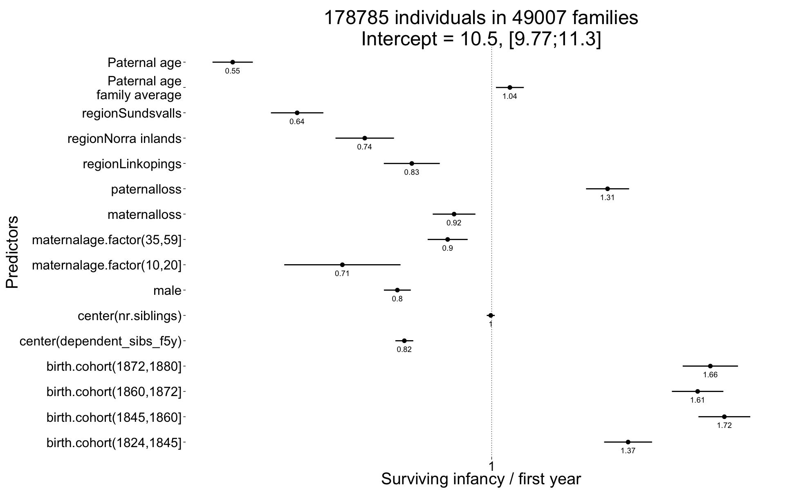
plot_residuals(Survive_infancy)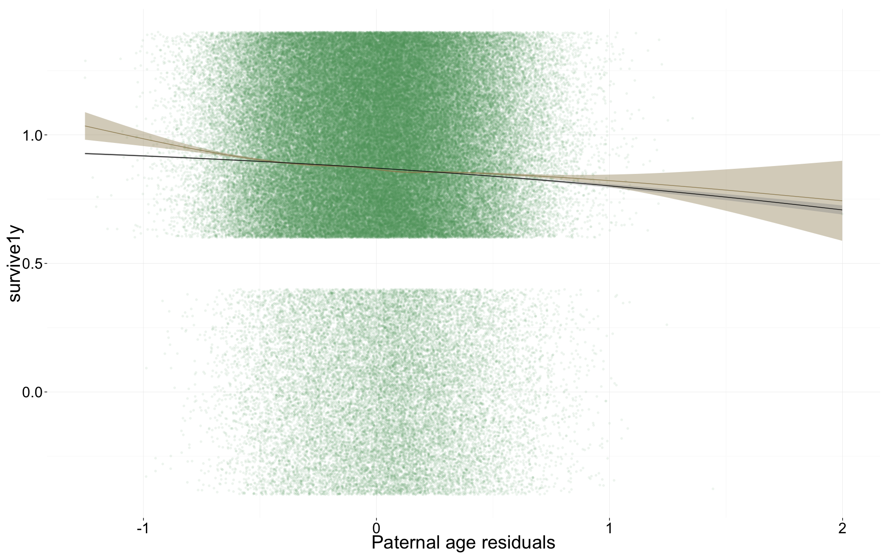
Survival to reproductive age
Survive_reproductive <- glmer(
surviveR ~ center(dependent_sibs_f5y) + maternalage.factor + paternalloss + maternalloss + center(nr.siblings) + birth.cohort + male +paternalage.mean + paternalage.diff + region+ (1|idParents),
data= ddb.1, subset = survive1y == TRUE,
family = 'binomial', control = control_defaults)
summary(Survive_reproductive)## Generalized linear mixed model fit by maximum likelihood (Laplace
## Approximation) [glmerMod]
## Family: binomial ( logit )
## Formula: surviveR ~ center(dependent_sibs_f5y) + maternalage.factor +
## paternalloss + maternalloss + center(nr.siblings) + birth.cohort +
## male + paternalage.mean + paternalage.diff + region + (1 |
## idParents)
## Data: ddb.1
## Control: control_defaults
## Subset: survive1y == TRUE
##
## AIC BIC logLik deviance df.resid
## 95351 95525 -47657 95315 115647
##
## Scaled residuals:
## Min 1Q Median 3Q Max
## -4.001 0.264 0.324 0.403 1.142
##
## Random effects:
## Groups Name Variance Std.Dev.
## idParents (Intercept) 0.702 0.838
## Number of obs: 115665, groups: idParents, 35325
##
## Fixed effects:
## Estimate Std. Error z value Pr(>|z|)
## (Intercept) 2.347226 0.036918 63.6 < 2e-16 ***
## center(dependent_sibs_f5y) -0.091281 0.009737 -9.4 < 2e-16 ***
## maternalage.factor(10,20] -0.180639 0.080867 -2.2 0.02550 *
## maternalage.factor(35,59] 0.114530 0.026363 4.3 1.4e-05 ***
## paternalloss -0.381666 0.026107 -14.6 < 2e-16 ***
## maternalloss -0.403233 0.026379 -15.3 < 2e-16 ***
## center(nr.siblings) -0.000835 0.004549 -0.2 0.85435
## birth.cohort(1824,1845] 0.194524 0.031710 6.1 8.5e-10 ***
## birth.cohort(1845,1860] -0.092538 0.031815 -2.9 0.00363 **
## birth.cohort(1860,1872] -0.262716 0.031771 -8.3 < 2e-16 ***
## birth.cohort(1872,1880] -0.284274 0.034710 -8.2 2.6e-16 ***
## male -0.133967 0.017902 -7.5 7.2e-14 ***
## paternalage.mean 0.057132 0.016877 3.4 0.00071 ***
## paternalage.diff -0.348446 0.025307 -13.8 < 2e-16 ***
## regionLinkopings -0.438633 0.031037 -14.1 < 2e-16 ***
## regionNorra inlands -0.145284 0.031510 -4.6 4.0e-06 ***
## regionSundsvalls 0.018012 0.029578 0.6 0.54255
## ---
## Signif. codes: 0 '***' 0.001 '**' 0.01 '*' 0.05 '.' 0.1 ' ' 1
##
## Correlation of Fixed Effects:
## (Intr) c(__5) m.(10, m.(35, ptrnll mtrnll cnt(.) b.(182 b.(184
## cntr(dp__5) -0.112
## mtr.(10,20] -0.021 0.099
## mtr.(35,59] -0.287 0.105 -0.035
## paternallss -0.071 0.006 -0.025 0.044
## maternallss -0.052 -0.001 0.011 0.010 -0.372
## cntr(nr.sb) 0.035 -0.537 -0.059 -0.050 0.081 0.079
## b.(1824,184 -0.511 0.003 0.006 0.029 0.017 0.009 -0.086
## b.(1845,186 -0.548 -0.001 0.013 0.018 0.005 -0.014 -0.102 0.548
## b.(1860,187 -0.537 0.011 0.005 -0.001 -0.066 -0.101 -0.132 0.531 0.599
## b.(1872,188 -0.495 -0.013 -0.006 0.010 -0.115 -0.155 -0.144 0.488 0.534
## male -0.261 0.001 0.003 -0.001 0.005 0.005 0.005 -0.003 -0.003
## paternlg.mn -0.031 0.029 0.031 -0.148 0.016 0.034 -0.123 0.072 0.067
## patrnlg.dff 0.220 0.099 0.151 -0.653 -0.046 -0.006 -0.017 -0.067 -0.042
## regnLnkpngs -0.573 0.084 0.006 0.035 -0.096 -0.102 0.052 0.118 0.170
## rgnNrrinlnd -0.502 0.051 -0.007 0.021 0.000 -0.001 -0.032 0.112 0.120
## rgnSndsvlls -0.441 0.075 -0.005 0.033 -0.098 -0.067 0.086 0.018 0.019
## b.(186 b.(187 male ptrnlg.m ptrnlg.d rgnLnk rgnNri
## cntr(dp__5)
## mtr.(10,20]
## mtr.(35,59]
## paternallss
## maternallss
## cntr(nr.sb)
## b.(1824,184
## b.(1845,186
## b.(1860,187
## b.(1872,188 0.615
## male 0.000 0.000
## paternlg.mn 0.043 0.028 -0.003
## patrnlg.dff -0.058 -0.072 0.002 0.103
## regnLnkpngs 0.205 0.227 0.006 -0.021 -0.031
## rgnNrrinlnd 0.119 0.110 0.001 -0.037 -0.022 0.509
## rgnSndsvlls -0.012 -0.001 0.002 0.003 0.010 0.563 0.500Survive_reproductive_coefs = fortify_mine(Survive_reproductive)
plot_fortified_mer(Survive_reproductive_coefs, "Surviving to reproductive age / 15 years")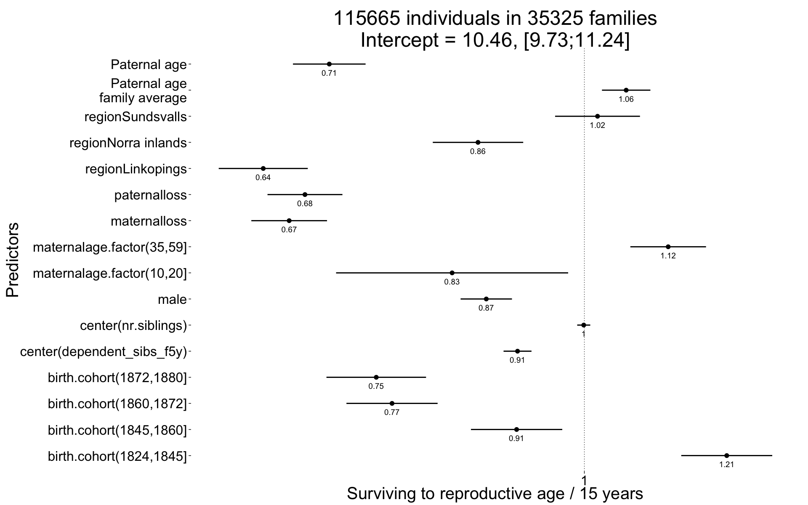
plot_residuals(Survive_reproductive)
Ever married
Ever_married <- glmer(
ever_married ~ center(dependent_sibs_f5y) + maternalage.factor + paternalloss + maternalloss + center(nr.siblings) + birth.cohort + male +paternalage.mean + paternalage.diff + region + (1|idParents),
data= ddb.1, subset = surviveR == T & byear < 1850,
family = 'binomial', control = control_defaults )
summary(Ever_married)## Generalized linear mixed model fit by maximum likelihood (Laplace
## Approximation) [glmerMod]
## Family: binomial ( logit )
## Formula: ever_married ~ center(dependent_sibs_f5y) + maternalage.factor +
## paternalloss + maternalloss + center(nr.siblings) + birth.cohort +
## male + paternalage.mean + paternalage.diff + region + (1 |
## idParents)
## Data: ddb.1
## Control: control_defaults
## Subset: surviveR == T & byear < 1850
##
## AIC BIC logLik deviance df.resid
## 60366 60507 -30167 60334 48491
##
## Scaled residuals:
## Min 1Q Median 3Q Max
## -2.499 -0.851 0.483 0.651 2.118
##
## Random effects:
## Groups Name Variance Std.Dev.
## idParents (Intercept) 0.714 0.845
## Number of obs: 48507, groups: idParents, 17246
##
## Fixed effects:
## Estimate Std. Error z value Pr(>|z|)
## (Intercept) 1.19253 0.03939 30.3 < 2e-16 ***
## center(dependent_sibs_f5y) -0.06446 0.01195 -5.4 0.0000000693 ***
## maternalage.factor(10,20] 0.08207 0.10026 0.8 0.4130
## maternalage.factor(35,59] -0.06994 0.03197 -2.2 0.0287 *
## paternalloss -0.37209 0.04076 -9.1 < 2e-16 ***
## maternalloss -0.39818 0.04293 -9.3 < 2e-16 ***
## center(nr.siblings) -0.03083 0.00576 -5.3 0.0000000889 ***
## birth.cohort(1824,1845] -0.06958 0.02667 -2.6 0.0091 **
## birth.cohort(1845,1860] -0.24245 0.04034 -6.0 0.0000000018 ***
## male -0.23144 0.02171 -10.7 < 2e-16 ***
## paternalage.mean -0.05465 0.01975 -2.8 0.0057 **
## paternalage.diff -0.15867 0.03069 -5.2 0.0000002349 ***
## regionLinkopings -1.22989 0.03823 -32.2 < 2e-16 ***
## regionNorra inlands 0.07523 0.03947 1.9 0.0566 .
## regionSundsvalls -0.12494 0.03909 -3.2 0.0014 **
## ---
## Signif. codes: 0 '***' 0.001 '**' 0.01 '*' 0.05 '.' 0.1 ' ' 1
##
## Correlation of Fixed Effects:
## (Intr) c(__5) m.(10, m.(35, ptrnll mtrnll cnt(.) b.(182 b.(184
## cntr(dp__5) -0.105
## mtr.(10,20] -0.012 0.091
## mtr.(35,59] -0.357 0.118 -0.041
## paternallss -0.094 0.014 -0.022 0.059
## maternallss -0.090 0.002 -0.002 0.029 -0.376
## cntr(nr.sb) 0.012 -0.536 -0.067 -0.034 0.091 0.066
## b.(1824,184 -0.495 0.029 0.007 0.043 0.017 0.019 -0.146
## b.(1845,186 -0.364 0.012 0.012 0.025 0.015 0.011 -0.122 0.445
## male -0.283 0.000 0.009 0.004 0.011 0.011 0.008 0.000 -0.002
## paternlg.mn -0.070 0.037 0.017 -0.154 0.000 0.064 -0.089 0.102 0.071
## patrnlg.dff 0.326 0.012 0.149 -0.646 -0.100 -0.040 0.052 -0.135 -0.104
## regnLnkpngs -0.651 0.117 0.001 0.059 -0.047 -0.038 0.084 0.155 0.141
## rgnNrrinlnd -0.586 0.067 -0.008 0.030 -0.022 -0.003 -0.028 0.163 0.119
## rgnSndsvlls -0.562 0.113 0.001 0.060 -0.019 0.015 0.124 0.030 0.032
## male ptrnlg.m ptrnlg.d rgnLnk rgnNri
## cntr(dp__5)
## mtr.(10,20]
## mtr.(35,59]
## paternallss
## maternallss
## cntr(nr.sb)
## b.(1824,184
## b.(1845,186
## male
## paternlg.mn 0.000
## patrnlg.dff 0.004 0.094
## regnLnkpngs 0.011 0.007 -0.034
## rgnNrrinlnd -0.011 -0.012 -0.045 0.552
## rgnSndsvlls -0.009 0.034 -0.032 0.581 0.519Ever_married_coefs = fortify_mine(Ever_married)
plot_fortified_mer(Ever_married_coefs, "Odds of ever marrying")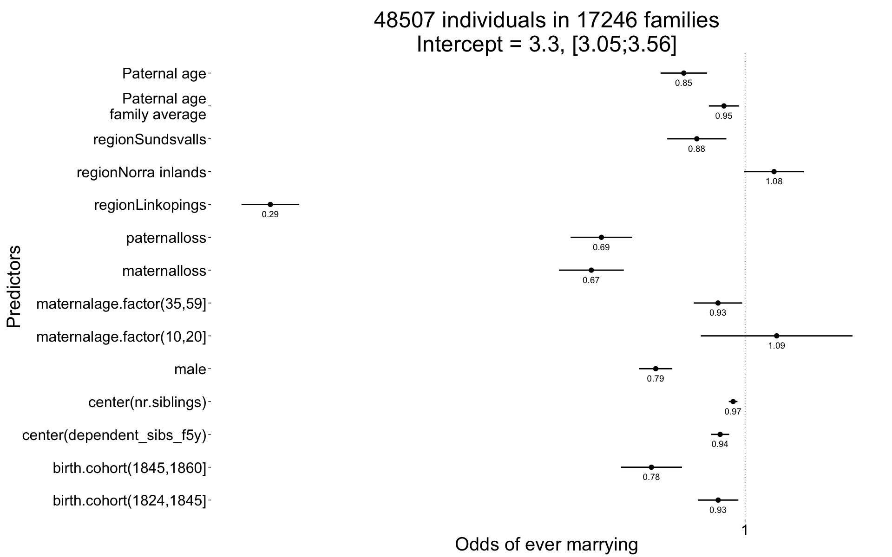
plot_residuals(Ever_married)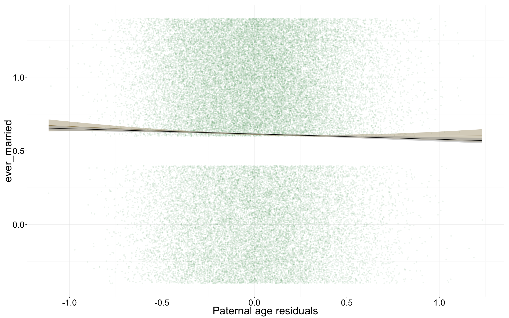
Number of children
Children <- glmer(
children ~ (center(spouses)*male + center(dependent_sibs_f5y) + maternalage.factor + paternalloss + maternalloss + center(nr.siblings) + birth.cohort + male +paternalage.mean + paternalage.diff ) + region + (1|idParents) + (1|idIndividu),
data= ddb.1, subset = spouses > 0 & byear < 1850,
family = 'poisson', control = control_defaults )
summary(Children)## Generalized linear mixed model fit by maximum likelihood (Laplace
## Approximation) [glmerMod]
## Family: poisson ( log )
## Formula:
## children ~ (center(spouses) * male + center(dependent_sibs_f5y) +
## maternalage.factor + paternalloss + maternalloss + center(nr.siblings) +
## birth.cohort + male + paternalage.mean + paternalage.diff) +
## region + (1 | idParents) + (1 | idIndividu)
## Data: ddb.1
## Control: control_defaults
## Subset: spouses > 0 & byear < 1850
##
## AIC BIC logLik deviance df.resid
## 150020 150178 -74991 149982 29826
##
## Scaled residuals:
## Min 1Q Median 3Q Max
## -1.7685 -0.6143 0.0525 0.4602 1.4421
##
## Random effects:
## Groups Name Variance Std.Dev.
## idIndividu (Intercept) 0.2769 0.526
## idParents (Intercept) 0.0562 0.237
## Number of obs: 29845, groups: idIndividu, 29845; idParents, 13472
##
## Fixed effects:
## Estimate Std. Error z value Pr(>|z|)
## (Intercept) 1.14047 0.02099 54.3 < 2e-16 ***
## center(spouses) 0.32105 0.01810 17.7 < 2e-16 ***
## male 0.13603 0.02326 5.8 5.0e-09 ***
## center(dependent_sibs_f5y) -0.00144 0.00474 -0.3 0.7607
## maternalage.factor(10,20] 0.02130 0.03809 0.6 0.5760
## maternalage.factor(35,59] 0.03384 0.01303 2.6 0.0094 **
## paternalloss -0.02476 0.01850 -1.3 0.1809
## maternalloss -0.13764 0.02001 -6.9 6.1e-12 ***
## center(nr.siblings) 0.01044 0.00219 4.8 1.8e-06 ***
## birth.cohort(1824,1845] -0.00316 0.01052 -0.3 0.7639
## birth.cohort(1845,1860] -0.06448 0.01642 -3.9 8.6e-05 ***
## paternalage.mean -0.01090 0.00788 -1.4 0.1668
## paternalage.diff -0.02672 0.01239 -2.2 0.0310 *
## regionLinkopings -0.44335 0.01555 -28.5 < 2e-16 ***
## regionNorra inlands 0.01697 0.01360 1.2 0.2120
## regionSundsvalls -0.29147 0.01422 -20.5 < 2e-16 ***
## center(spouses):male 0.01763 0.02590 0.7 0.4962
## ---
## Signif. codes: 0 '***' 0.001 '**' 0.01 '*' 0.05 '.' 0.1 ' ' 1
##
## Correlation of Fixed Effects:
## (Intr) cntr() male c(__5) m.(10, m.(35, ptrnll mtrnll cnt(.)
## centr(spss) -0.718
## male -0.543 0.651
## cntr(dp__5) -0.079 0.004 -0.005
## mtr.(10,20] -0.009 0.002 0.005 0.099
## mtr.(35,59] -0.275 0.004 0.003 0.116 -0.039
## paternallss -0.064 0.005 0.007 0.011 -0.014 0.056
## maternallss -0.056 0.002 0.004 0.004 -0.016 0.027 -0.361
## cntr(nr.sb) 0.027 -0.011 -0.005 -0.565 -0.076 -0.032 0.082 0.058
## b.(1824,184 -0.370 0.005 -0.009 0.036 0.012 0.047 0.010 0.012 -0.149
## b.(1845,186 -0.241 -0.001 -0.007 0.011 0.017 0.022 0.006 0.000 -0.110
## paternlg.mn -0.045 0.004 0.003 0.034 0.020 -0.163 -0.017 0.063 -0.108
## patrnlg.dff 0.252 0.001 -0.006 -0.009 0.157 -0.644 -0.100 -0.040 0.067
## regnLnkpngs -0.368 -0.007 -0.011 0.113 -0.003 0.058 -0.052 -0.048 0.053
## rgnNrrinlnd -0.387 -0.019 -0.003 0.082 -0.013 0.038 -0.021 0.000 -0.035
## rgnSndsvlls -0.337 -0.037 -0.038 0.130 -0.003 0.074 -0.010 0.024 0.126
## cntr(spss): 0.495 -0.698 -0.925 0.003 -0.002 -0.003 -0.004 -0.002 0.004
## b.(182 b.(184 ptrnlg.m ptrnlg.d rgnLnk rgnNri rgnSnd
## centr(spss)
## male
## cntr(dp__5)
## mtr.(10,20]
## mtr.(35,59]
## paternallss
## maternallss
## cntr(nr.sb)
## b.(1824,184
## b.(1845,186 0.414
## paternlg.mn 0.104 0.068
## patrnlg.dff -0.131 -0.079 0.104
## regnLnkpngs 0.176 0.136 0.007 -0.041
## rgnNrrinlnd 0.185 0.117 -0.012 -0.045 0.489
## rgnSndsvlls 0.034 0.017 0.033 -0.039 0.487 0.502
## cntr(spss): 0.011 0.007 -0.004 0.006 0.011 -0.002 0.041Children_coefs = fortify_mine(Children)
plot_fortified_mer(Children_coefs, "Nr. Children (of those who had at least one spouse")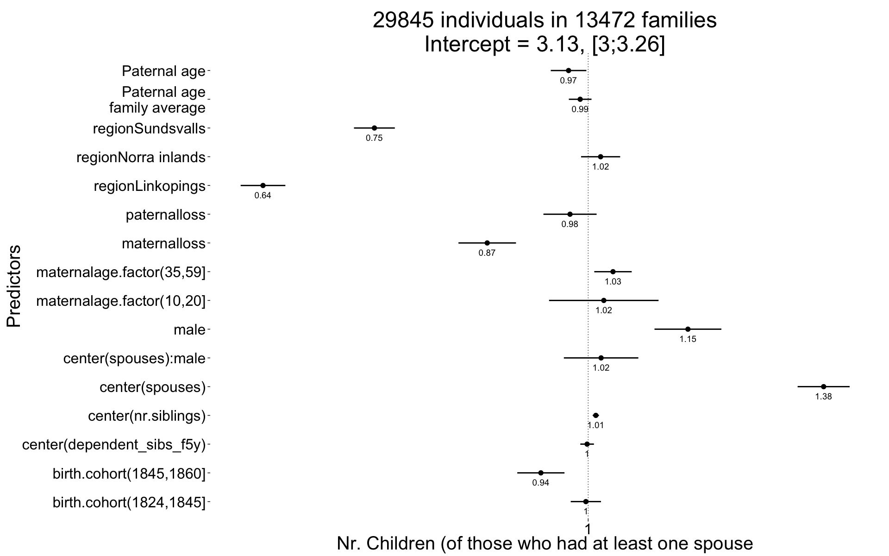
plot_residuals(Children)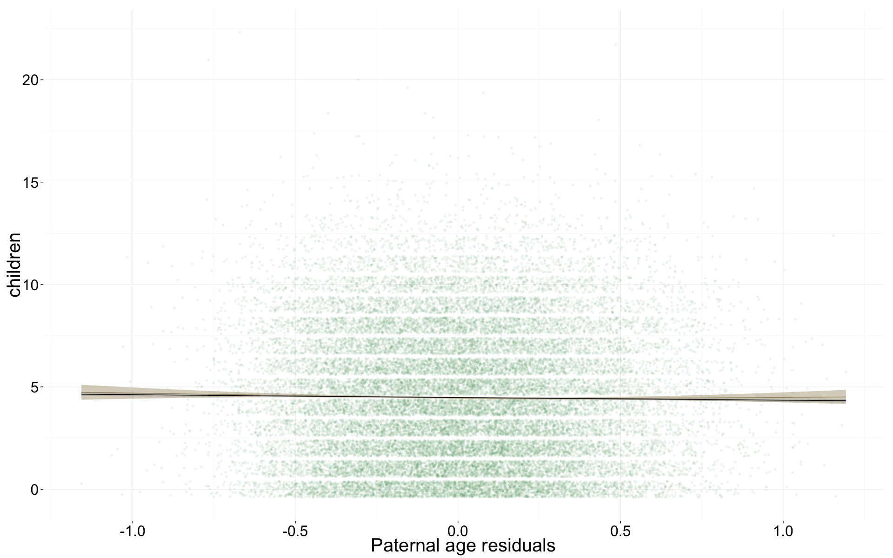
Number of children who survive at least 1 year
Children.surviving1y <- glmer(
children.surviving1y ~ scale(children.wddate) + scale(dependent_sibs_f5y) + maternalage.factor + paternalloss + maternalloss + scale(nr.siblings) + birth.cohort + male +paternalage.mean + paternalage.diff + region + (1|idParents) + (1|idIndividu),
data= ddb.1, subset = children > 0 & byear < 1850,
family = 'poisson', control = control_defaults )## Warning in checkConv(attr(opt, "derivs"), opt$par, ctrl = control$checkConv, : Model is nearly unidentifiable: very large eigenvalue
## - Rescale variables?summary(Children.surviving1y)## Generalized linear mixed model fit by maximum likelihood (Laplace
## Approximation) [glmerMod]
## Family: poisson ( log )
## Formula:
## children.surviving1y ~ scale(children.wddate) + scale(dependent_sibs_f5y) +
## maternalage.factor + paternalloss + maternalloss + scale(nr.siblings) +
## birth.cohort + male + paternalage.mean + paternalage.diff +
## region + (1 | idParents) + (1 | idIndividu)
## Data: ddb.1
## Control: control_defaults
## Subset: children > 0 & byear < 1850
##
## AIC BIC logLik deviance df.resid
## 93248 93395 -46606 93212 26169
##
## Scaled residuals:
## Min 1Q Median 3Q Max
## -5.962 -0.537 0.032 0.491 1.100
##
## Random effects:
## Groups Name Variance Std.Dev.
## idIndividu (Intercept) 0 0
## idParents (Intercept) 0 0
## Number of obs: 26187, groups: idIndividu, 26187; idParents, 12535
##
## Fixed effects:
## Estimate Std. Error z value Pr(>|z|)
## (Intercept) 0.66226 0.01035 64.0 < 2e-16 ***
## scale(children.wddate) 0.39457 0.00207 190.6 < 2e-16 ***
## scale(dependent_sibs_f5y) 0.01193 0.00381 3.1 0.0018 **
## maternalage.factor(10,20] -0.01065 0.02521 -0.4 0.6729
## maternalage.factor(35,59] 0.00163 0.00866 0.2 0.8509
## paternalloss -0.02483 0.01252 -2.0 0.0473 *
## maternalloss -0.03076 0.01388 -2.2 0.0267 *
## scale(nr.siblings) -0.00654 0.00387 -1.7 0.0909 .
## birth.cohort(1824,1845] -0.01180 0.00669 -1.8 0.0776 .
## birth.cohort(1845,1860] -0.01935 0.01083 -1.8 0.0741 .
## male -0.00860 0.00601 -1.4 0.1527
## paternalage.mean -0.00413 0.00496 -0.8 0.4059
## paternalage.diff 0.00273 0.00832 0.3 0.7424
## regionLinkopings -0.06807 0.01007 -6.8 1.4e-11 ***
## regionNorra inlands -0.04366 0.00775 -5.6 1.7e-08 ***
## regionSundsvalls -0.08090 0.00889 -9.1 < 2e-16 ***
## ---
## Signif. codes: 0 '***' 0.001 '**' 0.01 '*' 0.05 '.' 0.1 ' ' 1
##
## Correlation of Fixed Effects:
## (Intr) scl(c.) s(__5) m.(10, m.(35, ptrnll mtrnll scl(n.)
## scl(chldr.) -0.507
## scl(dpn__5) -0.117 -0.004
## mtr.(10,20] -0.005 -0.016 0.108
## mtr.(35,59] -0.361 -0.020 0.112 -0.032
## paternallss -0.081 -0.009 0.014 -0.015 0.066
## maternallss -0.084 0.031 0.000 -0.023 0.024 -0.322
## scl(nr.sbl) 0.035 -0.054 -0.595 -0.097 -0.018 0.083 0.062
## b.(1824,184 -0.456 -0.008 0.046 0.017 0.055 0.012 0.011 -0.144
## b.(1845,186 -0.287 0.021 0.020 0.021 0.029 0.004 0.000 -0.091
## male -0.265 -0.059 -0.007 0.010 0.001 0.006 0.006 0.003
## paternlg.mn -0.047 0.004 0.034 0.013 -0.167 -0.031 0.071 -0.118
## patrnlg.dff 0.312 0.018 -0.020 0.159 -0.637 -0.108 -0.040 0.056
## regnLnkpngs -0.458 0.114 0.128 -0.003 0.058 -0.051 -0.052 0.035
## rgnNrrinlnd -0.438 -0.066 0.092 -0.017 0.043 -0.024 -0.003 -0.053
## rgnSndsvlls -0.460 0.117 0.143 -0.008 0.075 -0.007 0.023 0.101
## b.(182 b.(184 male ptrnlg.m ptrnlg.d rgnLnk rgnNri
## scl(chldr.)
## scl(dpn__5)
## mtr.(10,20]
## mtr.(35,59]
## paternallss
## maternallss
## scl(nr.sbl)
## b.(1824,184
## b.(1845,186 0.366
## male 0.006 0.006
## paternlg.mn 0.098 0.062 0.001
## patrnlg.dff -0.115 -0.047 -0.001 0.113
## regnLnkpngs 0.162 0.117 -0.023 0.006 -0.033
## rgnNrrinlnd 0.193 0.105 -0.011 -0.014 -0.044 0.425
## rgnSndsvlls 0.018 -0.004 -0.001 0.030 -0.040 0.413 0.445Children.surviving1y_coefs = fortify_mine(Children.surviving1y)
plot_fortified_mer(Children.surviving1y_coefs, "Nr. Children who survive first year (of those who survived infancy")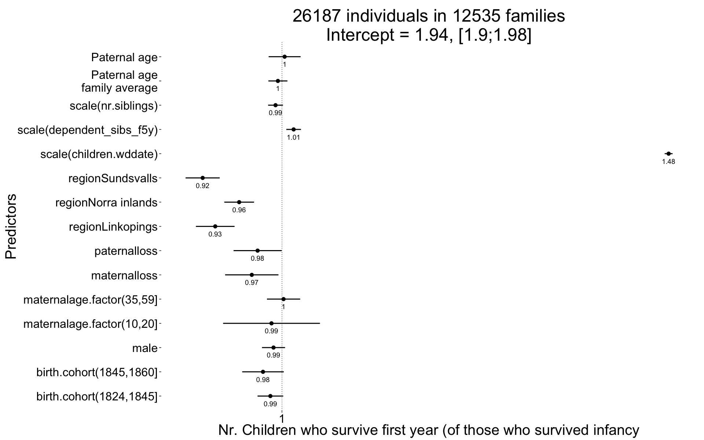
plot_residuals(Children.surviving1y)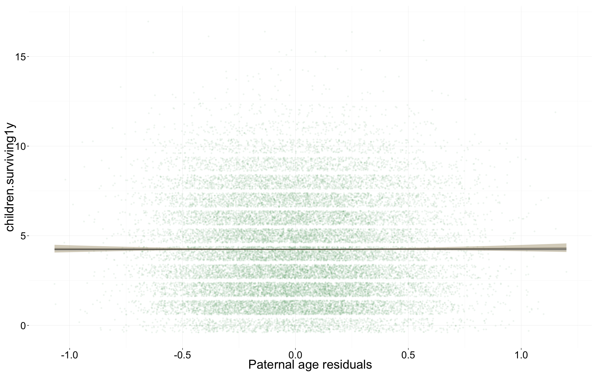
Number of grandchildren
Grandchildren.per.Child <- glmer(
grandchildren ~ center(dependent_sibs_f5y) + (center(children) + maternalage.factor + paternalloss + maternalloss + center(nr.siblings) + male +paternalage.mean + paternalage.diff ) + region + (1|idParents) + (1|idIndividu),
data= ddb.1, subset = children > 0 & byear < 1800,
family = 'poisson', control = control_defaults )
summary(Grandchildren.per.Child)## Generalized linear mixed model fit by maximum likelihood (Laplace
## Approximation) [glmerMod]
## Family: poisson ( log )
## Formula: grandchildren ~ center(dependent_sibs_f5y) + (center(children) +
## maternalage.factor + paternalloss + maternalloss + center(nr.siblings) +
## male + paternalage.mean + paternalage.diff) + region + (1 |
## idParents) + (1 | idIndividu)
## Data: ddb.1
## Control: control_defaults
## Subset: children > 0 & byear < 1800
##
## AIC BIC logLik deviance df.resid
## 14875 14957 -7424 14847 2451
##
## Scaled residuals:
## Min 1Q Median 3Q Max
## -1.5050 -0.5775 0.0021 0.1571 0.8747
##
## Random effects:
## Groups Name Variance Std.Dev.
## idIndividu (Intercept) 1.504 1.227
## idParents (Intercept) 0.347 0.589
## Number of obs: 2465, groups: idIndividu, 2465; idParents, 1442
##
## Fixed effects:
## Estimate Std. Error z value Pr(>|z|)
## (Intercept) -0.7402 0.0960 -7.71 1.2e-14 ***
## center(dependent_sibs_f5y) 0.0379 0.0344 1.10 0.26981
## center(children) 0.2852 0.0106 27.01 < 2e-16 ***
## maternalage.factor(10,20] 0.1846 0.2005 0.92 0.35733
## maternalage.factor(35,59] -0.1555 0.0856 -1.82 0.06921 .
## paternalloss -0.2974 0.1103 -2.70 0.00702 **
## maternalloss -0.4112 0.1169 -3.52 0.00044 ***
## center(nr.siblings) 0.0121 0.0151 0.80 0.42248
## male 0.0221 0.0617 0.36 0.72032
## paternalage.mean 0.0234 0.0453 0.52 0.60597
## paternalage.diff 0.1725 0.0844 2.04 0.04102 *
## regionNorra inlands 1.3242 0.0773 17.14 < 2e-16 ***
## ---
## Signif. codes: 0 '***' 0.001 '**' 0.01 '*' 0.05 '.' 0.1 ' ' 1
##
## Correlation of Fixed Effects:
## (Intr) c(__5) cntr() m.(10, m.(35, ptrnll mtrnll cnt(.) male
## cntr(dp__5) 0.029
## cntr(chldr) -0.459 0.013
## mtr.(10,20] 0.008 0.110 -0.047
## mtr.(35,59] -0.329 0.095 -0.013 -0.016
## paternallss -0.115 0.012 -0.041 0.012 0.052
## maternallss -0.115 0.019 0.036 -0.042 0.007 -0.313
## cntr(nr.sb) 0.129 -0.582 -0.051 -0.063 -0.011 0.111 0.042
## male -0.305 0.009 -0.031 0.039 -0.011 0.052 -0.013 -0.006
## paternlg.mn -0.084 0.033 0.015 0.019 -0.182 -0.107 0.063 -0.066 -0.023
## patrnlg.dff 0.289 -0.014 0.029 0.169 -0.569 -0.080 -0.043 0.076 0.054
## rgnNrrinlnd -0.564 -0.031 -0.081 -0.026 0.027 0.028 0.019 -0.160 -0.007
## ptrnlg.m ptrnlg.d
## cntr(dp__5)
## cntr(chldr)
## mtr.(10,20]
## mtr.(35,59]
## paternallss
## maternallss
## cntr(nr.sb)
## male
## paternlg.mn
## patrnlg.dff 0.114
## rgnNrrinlnd 0.040 -0.045Grandchildren.per.Child_coefs = fortify_mine(Grandchildren.per.Child)
plot_fortified_mer(Grandchildren.per.Child_coefs, "Nr. of grandchildren per child")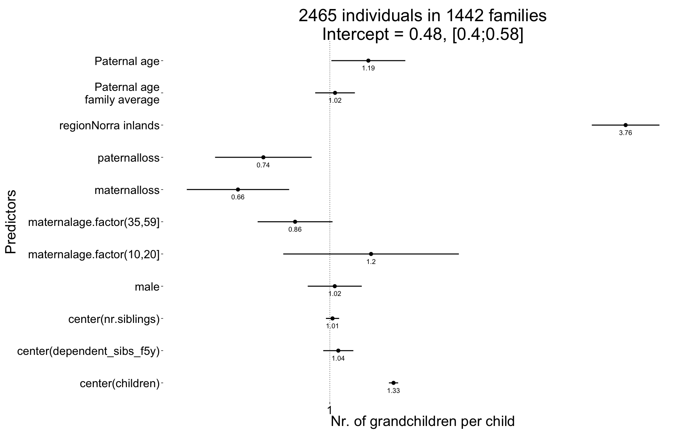
plot_residuals(Grandchildren.per.Child)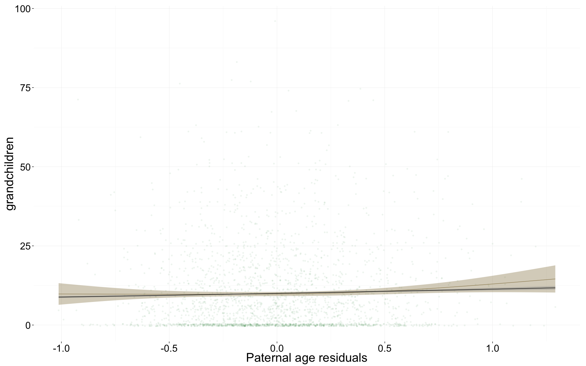
Any surviving children
Any_surviving_children <- glmer(
any_surviving_children ~ center(dependent_sibs_f5y) + maternalage.factor + paternalloss + maternalloss + center(nr.siblings) + birth.cohort + male +paternalage.mean + paternalage.diff + region + (1|idParents),
data= ddb.1,
subset = byear < 1850,
family = 'binomial', control = control_defaults )
summary(Any_surviving_children)## Generalized linear mixed model fit by maximum likelihood (Laplace
## Approximation) [glmerMod]
## Family: binomial ( logit )
## Formula:
## any_surviving_children ~ center(dependent_sibs_f5y) + maternalage.factor +
## paternalloss + maternalloss + center(nr.siblings) + birth.cohort +
## male + paternalage.mean + paternalage.diff + region + (1 |
## idParents)
## Data: ddb.1
## Control: control_defaults
## Subset: byear < 1850
##
## AIC BIC logLik deviance df.resid
## 80097 80246 -40032 80065 83834
##
## Scaled residuals:
## Min 1Q Median 3Q Max
## -1.863 -0.567 -0.295 -0.094 7.424
##
## Random effects:
## Groups Name Variance Std.Dev.
## idParents (Intercept) 0.649 0.805
## Number of obs: 83850, groups: idParents, 24324
##
## Fixed effects:
## Estimate Std. Error z value Pr(>|z|)
## (Intercept) -0.2095 0.0341 -6.1 8.4e-10 ***
## center(dependent_sibs_f5y) -0.1087 0.0105 -10.3 < 2e-16 ***
## maternalage.factor(10,20] -0.2025 0.0819 -2.5 0.0135 *
## maternalage.factor(35,59] -0.1186 0.0282 -4.2 2.7e-05 ***
## paternalloss -0.9103 0.0384 -23.7 < 2e-16 ***
## maternalloss -1.4183 0.0411 -34.5 < 2e-16 ***
## center(nr.siblings) -0.0160 0.0051 -3.1 0.0017 **
## birth.cohort(1824,1845] -0.1247 0.0235 -5.3 1.1e-07 ***
## birth.cohort(1845,1860] -0.5263 0.0376 -14.0 < 2e-16 ***
## male -0.0452 0.0189 -2.4 0.0168 *
## paternalage.mean -0.0124 0.0174 -0.7 0.4750
## paternalage.diff -0.1296 0.0270 -4.8 1.5e-06 ***
## regionLinkopings -1.5637 0.0358 -43.7 < 2e-16 ***
## regionNorra inlands -0.0123 0.0336 -0.4 0.7150
## regionSundsvalls -0.3047 0.0337 -9.0 < 2e-16 ***
## ---
## Signif. codes: 0 '***' 0.001 '**' 0.01 '*' 0.05 '.' 0.1 ' ' 1
##
## Correlation of Fixed Effects:
## (Intr) c(__5) m.(10, m.(35, ptrnll mtrnll cnt(.) b.(182 b.(184
## cntr(dp__5) -0.096
## mtr.(10,20] -0.009 0.091
## mtr.(35,59] -0.366 0.120 -0.043
## paternallss -0.081 0.014 -0.019 0.071
## maternallss -0.085 0.022 -0.003 0.040 -0.443
## cntr(nr.sb) 0.032 -0.537 -0.064 -0.027 0.093 0.068
## b.(1824,184 -0.501 0.034 0.007 0.046 0.010 0.025 -0.154
## b.(1845,186 -0.349 0.024 0.012 0.027 0.014 0.025 -0.126 0.425
## male -0.280 0.000 0.003 0.005 0.006 0.004 0.003 0.002 0.000
## paternlg.mn -0.061 0.033 0.025 -0.170 0.003 0.071 -0.091 0.104 0.067
## patrnlg.dff 0.355 0.013 0.157 -0.644 -0.101 -0.046 0.042 -0.146 -0.107
## regnLnkpngs -0.588 0.137 0.005 0.064 -0.039 -0.009 0.047 0.170 0.147
## rgnNrrinlnd -0.613 0.082 -0.011 0.038 -0.029 0.003 -0.031 0.183 0.123
## rgnSndsvlls -0.566 0.120 0.000 0.067 -0.022 0.014 0.123 0.032 0.034
## male ptrnlg.m ptrnlg.d rgnLnk rgnNri
## cntr(dp__5)
## mtr.(10,20]
## mtr.(35,59]
## paternallss
## maternallss
## cntr(nr.sb)
## b.(1824,184
## b.(1845,186
## male
## paternlg.mn 0.000
## patrnlg.dff -0.004 0.097
## regnLnkpngs -0.006 0.003 -0.043
## rgnNrrinlnd -0.007 -0.013 -0.054 0.539
## rgnSndsvlls -0.005 0.033 -0.033 0.554 0.540Any_surviving_children_coefs = fortify_mine(Any_surviving_children)
plot_fortified_mer(Any_surviving_children_coefs, "Any surviving children")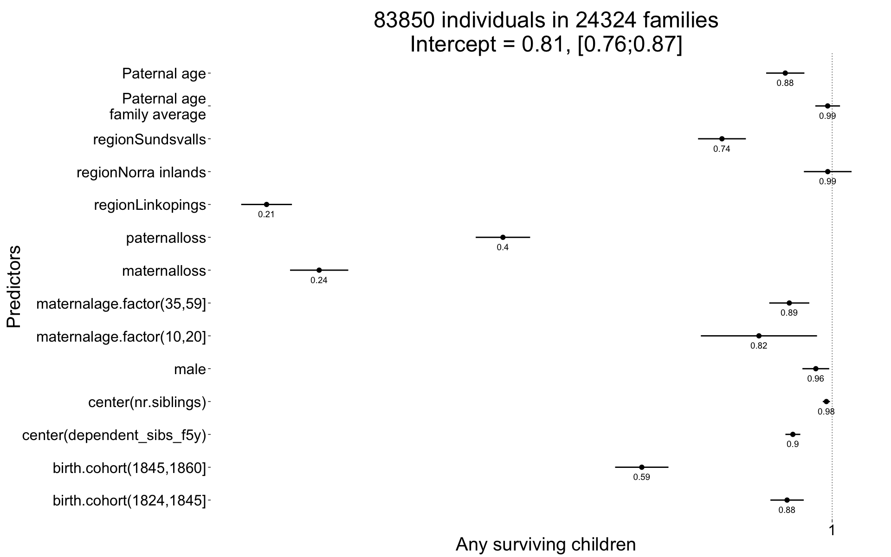
plot_residuals(Any_surviving_children)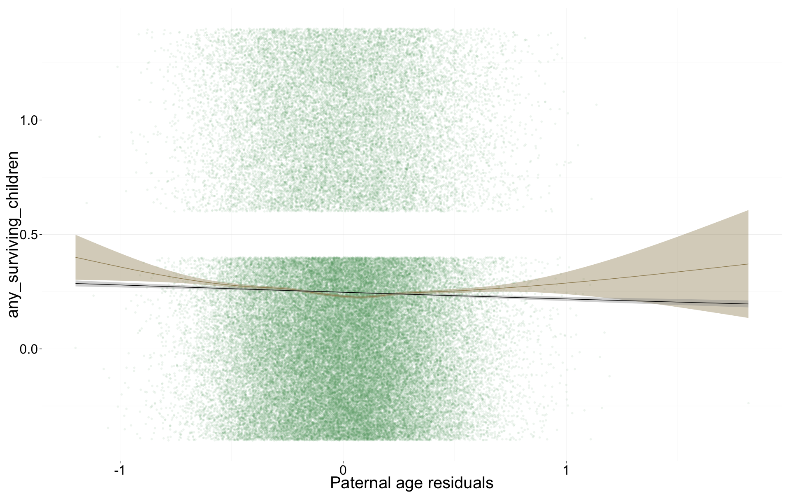
Wrap up
Save coefficients
name = "ddb_main_controls"
save(list = lstype('confint.merMod'),file=paste0("coefs/",name,"_coefs.rdata"))
save(list = lstype(),file=paste0("coefs/",name,"_models.rdata"))Session Info
sessionInfo()## R version 3.1.3 (2015-03-09)
## Platform: x86_64-apple-darwin13.4.0 (64-bit)
## Running under: OS X 10.10.2 (Yosemite)
##
## locale:
## [1] en_US.UTF-8/en_US.UTF-8/en_US.UTF-8/C/en_US.UTF-8/en_US.UTF-8
##
## attached base packages:
## [1] grid graphics grDevices utils datasets stats methods
## [8] base
##
## other attached packages:
## [1] MCMCglmm_2.22 ape_3.2 coda_0.17-1 pipeR_0.6
## [5] htmltools_0.2.6 XML_3.98-1.1 gridSVG_1.4-3 extrafont_0.17
## [9] lmerTest_2.0-20 blme_1.0-2 lme4_1.1-7 Rcpp_0.11.5
## [13] Matrix_1.1-5 zoo_1.7-11 foreign_0.8-63 mgcv_1.8-4
## [17] nlme_3.1-120 haven_0.1.1.9000 QuantPsyc_1.5 MASS_7.3-39
## [21] boot_1.3-15 psych_1.5.1 Hmisc_3.15-0 Formula_1.2-0
## [25] survival_2.38-1 lattice_0.20-30 reshape2_1.4.1 lubridate_1.3.3
## [29] car_2.0-25 stringi_0.4-1 dplyr_0.4.1 pander_0.5.2
## [33] knitr_1.9 rmarkdown_0.5.1 plyr_1.8.1 ggplot2_1.0.0
## [37] formr_0.1.11 data.table_1.9.5 stringr_0.6.2 devtools_1.7.0
##
## loaded via a namespace (and not attached):
## [1] acepack_1.3-3.3 assertthat_0.1 bitops_1.0-6
## [4] caTools_1.17.1 chron_2.3-45 cluster_2.0.1
## [7] codetools_0.2-10 colorspace_1.2-5 corpcor_1.6.7
## [10] cubature_1.1-2 DBI_0.3.1 digest_0.6.8
## [13] evaluate_0.5.5 extrafontdb_1.0 formatR_1.0
## [16] formula.tools_1.3.4 gdata_2.13.3 gplots_2.16.0
## [19] gtable_0.1.2 gtools_3.4.1 KernSmooth_2.23-14
## [22] labeling_0.3 latticeExtra_0.6-26 lazyeval_0.1.10
## [25] magrittr_1.5 memoise_0.2.1 minqa_1.2.4
## [28] mnormt_1.5-1 munsell_0.4.2 nloptr_1.0.4
## [31] nnet_7.3-9 numDeriv_2012.9-1 operator.tools_1.3.0
## [34] parallel_3.1.3 pbkrtest_0.4-2 proto_0.3-10
## [37] quantreg_5.11 RColorBrewer_1.1-2 RJSONIO_1.3-0
## [40] rpart_4.1-9 Rttf2pt1_1.3.3 scales_0.2.4
## [43] SparseM_1.6 splines_3.1.3 tcltk_3.1.3
## [46] tensorA_0.36 tools_3.1.3date()## [1] "Mon Mar 30 17:49:24 2015"